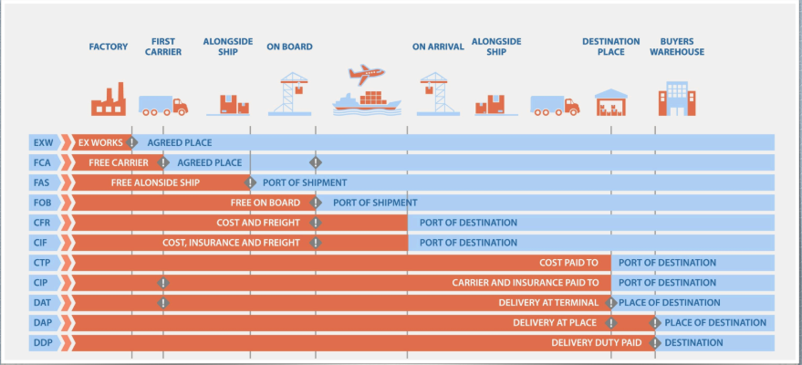
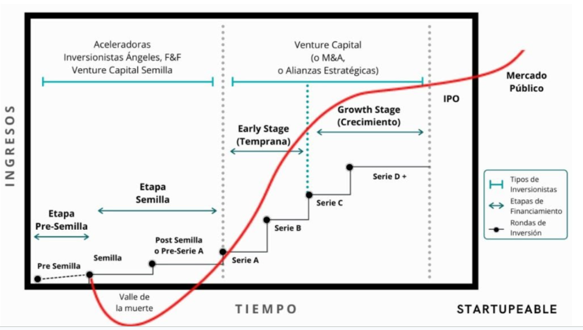
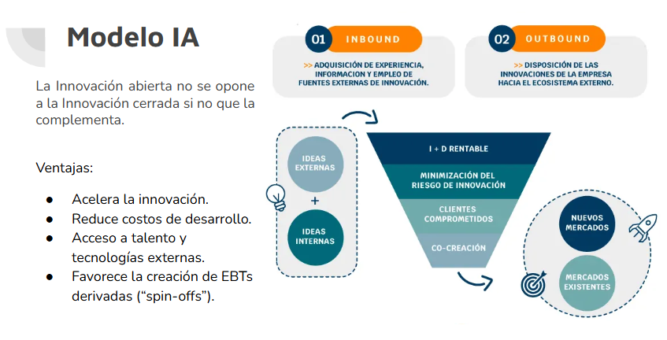
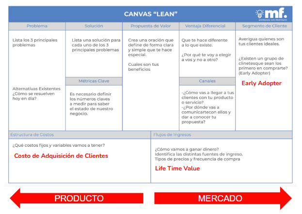

Empresas de Base Tecnológica 2
Apunte de EBT 2 (FIUBA): el marco legal y económico de operar una empresa tecnológica, del comercio internacional y los impuestos a la evaluación de negocio, la planificación y las start-ups.
Cómo se rinde EBT 2
Antes de arrancar, el mapa de la materia: qué temas entran en cada parcial y cómo conviene estudiarlos. EBT 2 no se aprueba programando sino definiendo con precisión, comparando, clasificando y justificando, así que la estrategia de estudio pesa tanto como el contenido. Este capítulo ordena los once capítulos de la guía en los dos bloques de parciales y cierra con el método de estudio que la cátedra premia.
EBT 2 mezcla derecho aplicado a la tecnología, impuestos, economía y gestión y evaluación de negocios. No se codea: se trata de definir con precisión, comparar, clasificar y justificar. El material se organiza en dos bloques, uno por parcial.
Primer parcial: el lado legal y fiscal
- Comercio internacional (Incoterms, aduana, balanza de pagos)
- Empresa (sociedad vs. empresa, modelo y plan de negocio)
- Impuestos y tributos (IVA, IIBB, BBPP, Sellos, IDCB, IIGG)
- Contratos (tipos y cláusulas)
- Derecho comercial y propiedad intelectual
- Datos personales (ley, habeas data, consentimiento)
- RSE y sostenibilidad
Segundo parcial: el lado económico y de negocio
- Economía (macro, micro, mercados)
- Evaluación de negocio (Porter, Canvas, costeo, VAN, punto de equilibrio)
- Planificación y administración (FODA, presupuesto, estado de resultados)
- Start-ups e innovación (Lean Startup, MVP, financiamiento)
Cómo estudiar
Todo el contenido de esta guía proviene de los apuntes de la materia en Notion. Donde el original tenía un diagrama de las diapositivas, se reprodujo con un esquema equivalente o se dejó indicado.
Comercio internacional
Antes de vender tecnología afuera hay que entender la cancha: qué es el comercio internacional (y en qué se diferencia del comercio exterior), quiénes intervienen cuando una mercadería cruza una frontera (Aduana, despachante, freight forwarder, broker, trader) y bajo qué reglas se pacta la venta (los Incoterms). El capítulo cierra con las dos ideas económicas de fondo, ventaja competitiva y ventaja comparativa, y con la balanza de pagos, el registro contable que resume todo el intercambio de un país con el mundo.
Beneficios del comercio internacional
- Acceso a mercados más amplios: expansión de oportunidades.
- Especialización y eficiencia: ventajas comparativas y economías de escala.
- Diversificación de ByS: más variedad para los consumidores.
- Inversión y desarrollo económico: inversión extranjera directa y desarrollo regional.
- Transferencia de tecnología y conocimiento: innovación y mejora.
- Reducción de costos y precios: por la competencia internacional.
- Estabilidad y cooperación internacional: relaciones diplomáticas e interdependencia económica.
- Adaptación y resiliencia: diversificación de proveedores y mercados.
Importación y exportación
Cuotas de importación: su objetivo es proteger a las industrias nacionales de la competencia extranjera excesiva, regular el mercado y equilibrar la oferta y la demanda.
Actores
Aduana
Delitos aduaneros (con ejemplos):
| Delito | Qué es | Ejemplo |
|---|---|---|
| Contrabando | Entrar o sacar productos del país sin declarar | Meter celulares desde Paraguay sin pasar por Aduana |
| Fraude aduanero | Falsificar papeles o mentir en la declaración para pagar menos | Declarar una notebook en USD 200 cuando vale USD 1.000 |
| Evasión de impuestos y aranceles | No pagar lo que corresponde al importar/exportar | Traer ropa del exterior y no abonar el impuesto de importación |
| Impo/expo ilegal | Comerciar bienes prohibidos por ley | Exportar armas sin autorización |
| Documentos falsos | Usar papeles adulterados para engañar a la Aduana | Presentar una factura falsa de origen de mercadería |
| Violación de regulaciones | Ingresar o sacar productos regulados sin cumplir requisitos | Importar químicos tóxicos sin permisos ambientales |
| Manipuleo de contenedores | Alterar cargas para esconder productos ilegales | Esconder droga dentro de un contenedor de frutas |
Consecuencias: sanciones penales, sanciones administrativas, confiscación de bienes y daño de reputación.
Despachante de aduana
Freight forwarder
Broker vs. trader
| Broker | Trader |
|---|---|
| Intermediario de venta: une comprador y vendedor | Gestiona la compra de productos en un país y su venta en otro |
| Cobra por comisión | Asume más riesgo que el broker, pero las ganancias por venta son mayores |
Organismos reguladores
- OMC: Organización Mundial del Comercio.
- FMI: Fondo Monetario Internacional.
- BM: Grupo Banco Mundial.
- OMA: Organización Mundial de Aduanas.
- Comisión Europea.
- Bloques y acuerdos regionales: TLCAN/USMCA, ASEAN, ALADI.
- Agencias nacionales de regulación.
- Organizaciones de normalización: por ejemplo, ISO.
Incoterms
Son los distintos tipos de acuerdo de venta reconocidos a nivel internacional. Los colores del cuadro representan hasta dónde llega la limitación de responsabilidad del comprador y del vendedor a lo largo del transporte.

Ventajas
Ventaja competitiva
| Liderazgo en costos | Diferenciación |
|---|---|
| Economías de escala | Características únicas del producto |
| Eficiencias operativas | Calidad superior e innovación |
| Reducción de costos de producción | Servicio al cliente excepcional |
| Optimización de la cadena de suministro | Branding efectivo |
| Ejemplos: Walmart, McDonald's | Ejemplos: Tesla, Apple |
Ventaja comparativa
Implicaciones: especialización, aprovechamiento de los beneficios del comercio y eficiencia global.
Balanza de pagos
- Cuenta corriente (CCo): mide intercambios de bienes, servicios, rentas y transferencias. CCo = Balanza comercial + Balanza de servicios + Rentas + Transferencias.
- Cuenta de capital (CCap): transferencias de capital y compra-venta de activos no financieros (terrenos, patentes). CCap = Ingresos − Pagos.
- Cuenta financiera (CF): movimientos de inversión (directa, cartera, préstamos, reservas). CF = Ingresos − Pagos.
- Errores u omisiones (EuO): ajuste de cierre para que la balanza cuadre.
Indicadores:
- Saldo comercial = Exportaciones − Importaciones de bienes.
- Saldo de bienes y servicios = Balanza comercial + Balanza de servicios.
- Saldo de cuenta corriente = resultado neto de bienes, servicios, rentas y transferencias.
Empresa
La empresa es la unidad que organiza recursos con fin de lucro, pero el derecho argentino nunca la definió taxativamente: lo que la ley regula es la sociedad, la forma jurídica que la envuelve. Este capítulo define la empresa, la contrasta con la sociedad (la confusión clásica del tema) y repasa sus elementos materiales, humanos e intangibles. Cierra con otra distinción que se pregunta seguido: modelo de negocio contra plan de negocio.
Sociedades vs. empresas
| Aspecto | Empresa | Sociedad |
|---|---|---|
| Naturaleza | Actividad económica u organización productiva | Forma jurídica de asociación entre personas |
| Reconocimiento legal | No tiene definición jurídica propia; aparece a través del empresario (físico o jurídico) | Regulada en la Ley de Sociedades; es persona jurídica |
| Sujeto de derecho | El empresario (dueño) | La sociedad misma (tiene patrimonio, razón social) |
| Responsabilidad | Puede ser ilimitada si es empresario individual | Según el tipo societario: limitada (S.A., S.R.L.) o ilimitada (sociedad colectiva) |
Elementos de la empresa
| Elementos | Componentes |
|---|---|
| Materiales | Bienes inmuebles, bienes muebles, maquinaria, rodados, mercadería |
| Humanos | Nómina de personal |
| Inmateriales o intangibles | Valor llave, valor clientela, propiedad industrial o comercial, propiedad intelectual |
Modelo de negocio vs. plan de negocio
Impuestos y tributos
Los derechos que declara la Constitución se ejercen con rentas públicas: el Estado se financia con tributos, y toda empresa convive con ellos. Este capítulo define el tributo y sus clases, el principio de capacidad contributiva y el hecho imponible, y clasifica los impuestos según trasladabilidad, incidencia y alícuota. Después recorre los impuestos argentinos uno por uno (IVA, IIBB, Bienes Personales, Sellos, IDCB, Ganancias) con su cuádrupla característica, las condiciones frente al IVA y el rol de los agentes de retención y percepción.
Tributos
- No vinculados (sin contraprestación directa): impuestos (ej. IVA).
- Vinculados (asociados a un servicio o beneficio del Estado): tasas (ej. ABL) y contribuciones especiales (ej. obras).
Capacidad contributiva
Principio tributario: cada persona o entidad debe pagar impuestos en función de la manifestación de su capacidad económica real o potencial.
- Manifestación real: ingresos (ej. IIGG) y patrimonio (ej. Bienes Personales).
- Manifestación potencial: consumo (ej. IVA) y desarrollo de actividades económicas (ej. Sellos).
Hecho imponible
Otras clasificaciones
| Clasificación | Distinción |
|---|---|
| Trasladables vs. no trasladables | Trasladable: el contribuyente traslada el costo a otro, generalmente al consumidor final. No trasladable: recae directamente sobre el contribuyente. |
| Directos vs. indirectos | Directo: grava una manifestación real de capacidad contributiva. Indirecto: grava una manifestación potencial. |
| Según alícuota | Fijos: el monto no varía si no cambia la situación patrimonial (ej. Monotributo). Progresivos: el porcentaje crece con la manifestación explícita de capacidad contributiva. Regresivos: el porcentaje es fijo y no tiene relación directa con la capacidad contributiva. |
Los impuestos, uno por uno
| Impuesto | Hecho / base imponible | Jurisdicción | D/I | Trasl. | Alícuota | Progr. |
|---|---|---|---|---|---|---|
| IVA | Compra/venta (al entregar el bien o emitir factura). | Nacional | Indirecto | Sí | 21% general, 10,5% alimentos, 27% servicios públicos, 0% exentos | Regresivo |
| IIBB | Realizar una actividad económica; base = facturación total sin restar costos. | Provincial | Directo | No | 1% a 5% | Regresivo |
| BBPP (Bienes Personales) | Situación patrimonial al 31/12; base = valor de todos los bienes. | Nacional | Directo | No | 0,25% a 1,75% | Progresivo |
| Sellos | Formalización de documentos con actos jurídicos; base = valor del contrato u operación. | Provincial | Directo | No | 0,5% a 3% | Regresivo |
| IDCB (Débitos y créditos) | Movimiento de dinero en cuenta bancaria (débito/crédito). | Nacional | Directo | No | 0,6% por cada crédito/débito | Regresivo |
| IIGG (Ganancias) | Ganancias netas del año fiscal. | Nacional | Directo | No | Personas físicas 5% a 35% (sobre mínimo); tasa fija 35% | Progresivo |
Condiciones frente al IVA
| Condición | Obligaciones ante AFIP | Facturación | IVA crédito/débito | Ejemplo |
|---|---|---|---|---|
| Responsable Inscripto (RI) | Factura discriminando IVA; declaraciones mensuales. | Factura A (a RI) / Factura B (a consumidor final, monotributistas, exentos). | Descuenta IVA crédito (compras) del IVA débito (ventas). | Empresa mayorista. |
| Monotributista | Cuota fija mensual que incluye IVA, Ganancias y aportes. | Solo Factura C. | No descuenta IVA; compra con IVA incluido. | Kiosco de barrio. |
| IVA Exento | No paga IVA al fisco. | Factura C (sin IVA discriminado). | No descuenta IVA crédito fiscal. | Colegio privado / hospital público. |
| Consumidor Final | Sin obligaciones de facturación. | Recibe Factura B o C. | Paga el IVA incluido en el precio; no descuenta. | Persona que compra en el súper. |
Agentes e ingreso al fisco
- Agente de retención: frente al pago de una obligación, retiene una parte del pago a su acreedor e ingresa ese monto al fisco.
- Agente de percepción: frente al cobro de un derecho, cobra un adicional por sobre el precio a su deudor e ingresa el monto al fisco.
- Ingreso al fisco: se realiza mediante el pago de SICORE (quincenal).
Contratos
Casi todo lo que pasa en la industria del software (contratar gente, proteger información, vender licencias) se formaliza en contratos. Este capítulo define qué es un contrato y cómo se manifiesta el consentimiento, recorre los cinco tipos más comunes del mundo del software (prestación de servicios, NDA, distribución, agencia y EULA) y cierra con las cláusulas particulares que conviene conocer antes de firmar. La regla de oro de la cátedra: todo por escrito.
- Ley para las partes: el contrato funciona como un reglamento por el cual se rige el comportamiento de los involucrados.
- Límites a la voluntad: la libertad de lo que se acuerda queda limitada por las leyes vigentes y el orden público (ej.: no se puede pactar una paga por debajo del SMVM).
- Consentimiento: se manifiesta por expresión de la voluntad, explícita (firma) o tácita (ej.: aceptación por mail). También por la Teoría de los Actos Propios: si uno actúa como si hubiese aceptado, el contrato se toma como válido.
Tipos de contrato más comunes
- Prestación de servicios: regido por obligación de resultados o de medios; plazo determinado (renovable), a veces atado a un proyecto. Requiere determinar claramente objeto, horas, entregables u objetivos y medición de resultados. Evade la ley de contrato de trabajo (una relación de dependencia encubierta); es el modo de contratación de empresas internacionales más común; si se pacta en moneda local, se acuerdan períodos de revisión.
- Confidencialidad (NDA): evita la filtración de información privada entre cliente final y quien implementa. Hay responsabilización solidaria: si comparto la información con un colega o subordinado, este también debe firmar el NDA con el cliente, o su filtración me cae a mí. Puede ser general o por información específica.
- Contrato de distribución: designa distribuidores para vender software de software factories; permite comercializar licencias como si fueran la propia factory. Puede ser con exclusividad (por materia o territorio) o no exclusivo. Importa la determinación de precios y beneficios; se agregan condiciones de auditoría, compliance y obligaciones de resultados; la factory se compromete a soporte y capacitaciones.
- Contrato de agencia: los agentes son intermediarios entre la factory y los clientes. No hay vínculo laboral ni regla de distribuidor. El agente hace gestiones comerciales y cobra por venta (un porcentaje o un fee); la factory brinda los medios normales para promoción y comercialización.
- EULA (licencia de usuario final): contrato directo entre cliente final y software factory. Debe incluir Site ID (identifica empresa o cliente) y número de serie (identifica la copia del software); sin ellos, carece de validez. Incluye políticas de buen uso y cuestiones prohibidas; con la descarga del software se entiende aceptado.
Cláusulas particulares
| Cláusula | Para qué sirve |
|---|---|
| Cesión de derechos | Permite reasignar los derechos del contrato. Para cuidarse: agregar que se requiera aceptación de la cesión. |
| Jurisdicción | En lo posible, negociar que sea en Tribunales de CABA. |
| Limitación de responsabilidad | Especifica hasta dónde llega la responsabilidad de cada parte. |
| Cierre | Da por entendido que el contrato es la versión final; invalida los términos de conversaciones previas no incluidos. |
| No renuncia | Ante el incumplimiento de una cláusula (o si una resulta leonina), no se invalida el resto del contrato. |
| Excesos | Determina en detalle qué pasa ante atrasos de entrega, necesidad de horas extra, etc. |
Derecho comercial y propiedad intelectual
Una empresa de base tecnológica vive de activos intangibles: la marca, el código, el conocimiento técnico que la diferencia. Este capítulo recorre el marco jurídico argentino de la propiedad intelectual: la rama industrial (marca, patente, diseño, modelo de utilidad, know-how) y los derechos de autor, con sus requisitos y vigencias. Cierra con lo que más importa en tech: el software se protege por derecho de autor y no por patente, y la titularidad conviene fijarla siempre por contrato de cesión.
Marco jurídico: Constitución Nacional (Art. 17), Ley 22.362 de Marcas y Designaciones, Modelos y Diseños Industriales (y Ley 27.444), Ley 11.867 de Fondo de Comercio, Ley 11.723 de Derechos de Autor.
La PI tiene dos grandes ramas: propiedad industrial (marca, patente de invención, nombre comercial, diseño industrial, modelo de utilidad, know-how) y derechos de autor (obras, software, contenidos).
Propiedad industrial
Marca
Palabras, emblemas, imágenes, etc., que identifican y diferencian productos y servicios. Autoridad de aplicación: INPI (Instituto Nacional de la Propiedad Industrial).
- Registro (da): monopolio y exclusividad de uso, protección de imagen, usufructo exclusivo, derecho de oposición ante uso desleal, y capacidad de ceder el uso a título oneroso o gratuito.
- Vigencia: 10 años desde el registro, renovable por otros 10 (indefinidamente). Para renovar se debe acreditar uso efectivo en los últimos 5 años. La transferencia es lícita; la cesión o venta del fondo de comercio implica la cesión de la marca salvo que se especifique lo contrario. Se extingue por renuncia, vencimiento o nulidad.
- Ley de Marcas 22.362 (requisitos): novedad relativa, distintividad y licitud. Prohibidos: nombres genéricos, descriptivos o contrarios a la moral.
- Procedimiento: presentación ante INPI → examen formal y sustancial → oposición de terceros → registro y vigencia (10 años renovables).
- No son marcas: designaciones necesarias o habituales, signos de uso general previo, la forma de los productos, su color natural.
- Ventaja estratégica: sin marca registrada, el nombre puede ser usado por terceros, aunque uno haya sido "el primero en usarlo".
Otros instrumentos
| Instrumento | Qué protege / define | Requisitos / vigencia |
|---|---|---|
| Patente de invención | Objeto, procedimiento, herramienta, compuesto químico o microorganismo. | Novedad + actividad inventiva + aplicación industrial. |
| Nombre comercial | Identifica a la persona jurídica o humana. No es lo mismo que la marca (Molinos ≠ Lucchetti). | No hay obligación de registrarlo (aunque recomendado). |
| Diseño industrial | La apariencia de un producto (líneas, contornos, colores, forma, textura, ornamentación). | Registro por 5 años, renovable por 2 períodos. |
| Modelo de utilidad | Mejora introducida en herramientas u objetos conocidos que implique una mejor utilización. | Novedad + aplicación industrial. |
| Know-how | Conocimientos técnicos no de dominio público, necesarios para producir o comercializar, que dan ventaja sobre competidores. Secreto industrial o comercial. | No se registra: se protege como secreto. |
| Dominios de Internet | No son propiedad intelectual: no confieren protección legal sobre el nombre. ICANN administra el DNS a nivel global; en Argentina, NIC Argentina. | No aplica. |
Derechos de autor
Protegen obras literarias, artísticas, científicas, audiovisuales, programas de computación, etc. Autoridad de aplicación: DNDA (Dirección Nacional del Derecho de Autor).
| Aspecto | Derecho de autor (continental: Argentina, Europa, LatAm) | Copyright (anglosajón: EE.UU., R.U.) |
|---|---|---|
| Enfoque | Relación personal del autor con la obra + explotación económica. | Explotación económica y comercial de la obra. |
| Derechos morales | Muy fuertes e irrenunciables (reconocimiento, integridad, divulgación, retiro). | Limitados o inexistentes. |
| Duración | Vida del autor + 70 años. | Vida + 70; obras corporativas 95 desde publicación o 120 desde creación. |
| Registro | Surge automáticamente con la creación (puede inscribirse como prueba). | Automático, pero el registro formal es requisito para demandar. |
| Titularidad | El autor es el titular originario (puede ceder los patrimoniales). | Muchas veces el empleador o productor ("work made for hire"). |
| Cesión | Se ceden los patrimoniales; los morales no se renuncian. | Se ceden en bloque, incluso casi todos los derechos del autor. |
Implicancias en el mundo tech
¿Cómo se protegen los códigos, programas y software en el derecho argentino? Están comprendidos como propiedad intelectual y protegidos por la ley de Derechos de Autor. La ley de Patentes inhibe patentar programas y código, por no considerarlos innovaciones.
Titulares del derecho (Art. 4, Ley 11.723):
- a) el autor de la obra;
- b) sus herederos o derechohabientes;
- c) quienes, con permiso del autor, la traducen, adaptan o modifican (sobre la obra resultante);
- d) las personas físicas o jurídicas cuyos dependientes contratados para elaborar un programa lo produzcan en el desempeño de sus funciones, salvo estipulación en contrario.
Datos personales
Todo dato que pueda vincularse con una persona está protegido por la Ley de Protección de Datos Personales, que garantiza el derecho al honor y a la intimidad. Este capítulo define el vocabulario del tema (dato personal, dato sensible, tratamiento, disociación), explica cuándo el consentimiento hace lícito un tratamiento y cuándo no hace falta, y recorre los derechos del titular y cómo ejercerlos ante la AAIP o por vía judicial con el habeas data. Cierra con las condiciones que hacen lícita la compra y venta de bases de datos.
Marco legal
- Ley de Protección de Datos Personales: su objetivo es la protección integral de los datos asentados en archivos, registros o bancos de datos (públicos o privados), para garantizar el derecho al honor y a la intimidad de las personas.
- Habeas data: acción para tomar conocimiento de los datos referidos a uno y su finalidad, y exigir su supresión, rectificación, confidencialidad o actualización ante falsedad o discriminación. Aun sin falsedad, puede pedirse para bases de datos no esenciales.
Otras definiciones
| Término | Definición |
|---|---|
| Dato sensible | Revela origen racial o étnico, opiniones políticas, convicciones religiosas, filosóficas o morales, afiliación sindical, salud o vida sexual. |
| Metadato | Información que caracteriza a los datos (contenido, calidad, trazabilidad, geolocalización, etc.). |
| Base o banco de datos | Conjunto organizado de datos personales sometidos a tratamiento, cualquiera sea su soporte o finalidad. |
| Tratamiento de datos | Operaciones para recolectar, conservar, modificar, relacionar, evaluar, ceder o eliminar datos. |
| Responsable | Persona física o jurídica titular de un archivo o base de datos. |
| Titular de los datos | Persona cuyos datos son objeto de tratamiento. |
| Usuario de datos | Quien utiliza o accede a datos en bases propias o ajenas. |
| Disociación | Procedimiento por el que los datos se transforman para que no puedan vincularse a una persona identificable. |
Consentimiento
No es necesario el consentimiento cuando los datos: son de acceso público irrestricto; derivan de funciones propias del Estado u obligaciones legales; son información básica (nombre, DNI, identificación tributaria, ocupación, fecha de nacimiento, domicilio); derivan de una relación contractual, científica o profesional necesaria; o en ciertas operaciones de entidades financieras.
Información requerida para solicitar un dato: finalidad; existencia del archivo con identidad y domicilio del responsable; carácter obligatorio o facultativo; consecuencias de darlo, negarse o su inexactitud; y la posibilidad de ejercer acceso, rectificación y supresión.
Derechos del titular
| Derecho | Qué permite | Ejemplo |
|---|---|---|
| Oposición (Art. 7) | Negarse a dar datos sensibles o impedir su uso para ciertos fines. | Una prepaga te pide tu religión: podés negarte. |
| Información (Art. 13) | Preguntar a la AAIP qué bases existen, sus fines y responsables. | Consultás si tu banco reporta a una base de deudores. |
| Acceso (Art. 14, habeas data) | Pedir qué datos tuyos tienen y para qué los usan. | Qué datos tuyos usa una financiera para el scoring. |
| Contenido de la información (Art. 15) | La información debe ser completa, clara y entendible. | Un hospital te da la historia clínica en términos comprensibles. |
| Rectificación, actualización y supresión (Art. 16) | Corregir, actualizar o eliminar datos falsos, innecesarios o ilegítimos. | Figura una deuda ya cancelada: pedís rectificación. |
| Consulta (Art. 13) | Consultar gratis las bases registradas en el órgano de control. | Ver qué empresas tienen bases con fines de marketing. |
Ante una violación: solicitar la supresión o modificación por los medios correspondientes. Si no hay respuesta en 5 días hábiles, quedan dos caminos: la vía administrativa (denuncia ante la autoridad de aplicación) o la vía judicial (acción de amparo por habeas data). Pueden ejercerlo el titular (o sus representantes legales) y el Defensor del Pueblo, contra el responsable de la base y los usuarios de datos.
- Solicitud de baja: quien no quiera recibir contenido comercial puede pedirlo en cualquier momento (contacto directo o Registro Nacional "No Llame").
- Autoridad de aplicación: la AAIP (Agencia de Acceso a la Información Pública): registra bases, recibe denuncias y asiste a los titulares.
Compra y venta de bases de datos
Los datos solo pueden cederse para el cumplimiento de fines relacionados con el interés legítimo del cedente y del cesionario, y con previo consentimiento del titular (revocable). No se necesita consentimiento cuando lo dispone una ley, entre dependencias del Estado, o para datos de salud con mecanismos de disociación.
El cesionario queda sujeto a las mismas obligaciones que el cedente, quien responde solidaria y conjuntamente. Entonces, la cesión es lícita si hay: consentimiento explícito del titular; infraestructura informática que garantice la seguridad; y registro de la base ante el organismo controlador.
RSE y sostenibilidad
Una empresa de base tecnológica no opera en el vacío: inversores, consumidores y reguladores le exigen cada vez más responsabilidad ambiental y social. Este capítulo define la sostenibilidad y sus tres dimensiones (ambiental, económica y social), muestra por qué los criterios ESG pesan en el financiamiento de startups, recorre los marcos regulatorios globales y argentinos, y cierra con un modelo de plan de sustentabilidad en cinco pasos.
Las tres dimensiones
| Dimensión | Qué implica |
|---|---|
| Ambiental | Gestión eficiente de los recursos naturales en la actividad productiva, para preservarlos a futuro. |
| Económica | Uso de prácticas económicamente rentables que sean, además, social y ambientalmente responsables. |
| Social | Fortalecimiento de la cohesión y estabilidad de las poblaciones y su desarrollo vital. |
Sostenibilidad en tech
- Financiamiento: inversores y fondos de venture priorizan criterios ESG (Environmental, Social & Governance).
- Mercado y talento: consumidores y talentos jóvenes valoran las empresas responsables.
- Regulación: riesgos legales y regulatorios crecientes.
Marcos regulatorios
Globales
- Acuerdo de París
- Agenda 2030 (ONU)
Nacionales
- Ley 25.675 (General del Ambiente): principios de prevención y responsabilidad ambiental.
- Ley 27.592 ("Ley Yolanda"): capacitación ambiental obligatoria para funcionarios públicos.
- Beneficios fiscales y programas de apoyo: energías renovables, financiamiento FONTAR.
Modelo de plan de sustentabilidad
- Diagnóstico inicial: análisis de impactos (huella de carbono, cadena de suministro, ética de datos) y mapeo de stakeholders.
- Definición de objetivos alineados a los ODS (Objetivos de Desarrollo Sostenible de la ONU).
- Estrategias y acciones concretas.
- Seguimiento de KPIs.
- Comunicación y reporting.
Economía
Panorama de economía en dos escalas: la macro, con sus indicadores clave (PBI, desempleo, tipo de cambio, inflación), y la micro, con mercado, oferta, demanda y las estructuras de mercado. En el medio, la herramienta más preguntada del capítulo: la ecuación de Fisher para pasar de tasas y salarios nominales a reales, y el análisis de por qué la inflación redistribuye ingresos y frena consumo e inversión.
Macroeconomía
Estudia el funcionamiento global de la economía. Indicadores clave:
- PBI: valor total de todos los bienes y servicios (ByS) producidos en una economía en un período (generalmente un año).
- Desempleo: personas en condiciones y con deseo de trabajar que no consiguen empleo. Tipos: cíclico (recesiones), estructural (cambios tecnológicos, desajuste entre oferta y demanda laboral) y friccional (transitorio).
- Tipo de cambio: relación de proporción entre los valores de dos monedas; surge del comercio internacional entre países con distintas monedas.
- Inflación: aumento sostenido y generalizado de los precios; se mide con el IPC. Tipos: de demanda, de costos, inercial o por expectativas, estructural y por política monetaria.
Tasas: nominal vs. real (Fisher)
La tasa efectiva es nominal respecto de la inflación; para saber el rendimiento verdadero se calcula la tasa real.
Salario inicial $500.000, final $750.000, inflación anual 100%.
- La pregunta correcta: ¿el salario creció más, igual o menos que los precios?
- Salario real final = 750.000 / (1 + TI) = 750.000 / 2 = $375.000.
- Esos $750.000 compran lo mismo que $375.000 del año anterior → el poder adquisitivo cayó un 25%. Nominalmente ganó más, pero los precios subieron más que el salario.
¿Por qué la inflación genera conflictos? Redistribuye ingresos entre trabajadores (piden aumentos para no perder), empresas (sus costos pueden subir más rápido que sus ingresos) y Estado (recauda más nominal pero debe actualizar jubilaciones, lo que genera tensión fiscal). Conflicto típico: "paritarias vs. precios vs. márgenes".
Impacto en consumo e inversión: el consumo cae (menor poder adquisitivo; se adelantan compras de durables si se espera más inflación); la inversión baja porque la incertidumbre dificulta calcular costos y rentabilidad, reduce el crédito real y empuja a dolarizar excedentes.
Microeconomía
Estudia el comportamiento de los agentes individuales.
- Mercado: espacio (físico o virtual) donde se encuentran oferentes y demandantes para intercambiar ByS o factores de producción. Pueden ser locales o globales, organizados o no organizados, formales o informales. El precio actúa como señal que coordina producción y consumo.
- Oferta: cantidad de un ByS que los productores están dispuestos a vender a diferentes precios.
- Demanda: cantidad de un ByS que los consumidores están dispuestos a adquirir a diferentes precios.
Estructuras de mercado
| Criterio | Competencia perfecta | Monopolio | Oligopolio | Competencia monopólica |
|---|---|---|---|---|
| Cantidad de empresas | Muchas | Una | Pocas | Muchas |
| Información | Perfecta | Perfecta | Imperfecta | Imperfecta |
| Homogeneidad del bien | Homogéneos | Un solo bien o servicio | Homogéneos o diferenciados | Diferenciados |
| Barreras de entrada/salida | No hay | Monopolio natural: control de un factor, patentes, tecnología única | Inversiones, ventaja en costos | Bajas |
| Influencia en los precios | No hay | Muchísima | Mucha | Poca |
Monopolio, oligopolio y competencia monopólica son formas de competencia imperfecta.
Punto de equilibrio
Evaluación de negocio
Detectada la oportunidad, falta decidir si el negocio se sostiene y cómo se lo arma. Este capítulo junta las herramientas de evaluación y diseño: la cruz de Porter para leer la estructura competitiva de la industria, el Business Model Canvas para pensar el modelo de negocio en nueve bloques (con TAM, SAM y SOM para dimensionar el mercado), la estrategia del océano azul para escapar de la competencia y el plan de negocio para bajarlo al papel. Cierra con los números que sostienen todo lo anterior: costeo por absorción y variable, punto de equilibrio, margen de seguridad, VAN y período de repago.
Cruz de Porter (5 fuerzas)
Objetivo: evaluar la estructura competitiva de una industria y comprender los factores que afectan su rentabilidad potencial.
- Rivalidad entre competidores: intensidad de la competencia. A mayor rivalidad, precios más bajos y menor margen.
- Amenaza de nuevos competidores: facilidad de entrada. A menores barreras, mayor amenaza.
- Poder de los proveedores: capacidad de influir en precios y condiciones. Menos proveedores → más poder.
- Poder de los clientes: influencia de los compradores sobre precios y condiciones de venta.
- Amenaza de sustitutos: riesgo de que el cliente opte por alternativas que satisfacen la misma necesidad.
Business Model Canvas
Herramienta para visualizar el modelo de negocio en 9 bloques: da visualización clara, análisis integral y planificación estratégica.
- Segmento de cliente (mercado): ¿para quién creamos valor? B2B, B2C o B2B2C. El tamaño se dimensiona con las fracciones de mercado TAM, SAM y SOM (siguiente sección).
- Propuesta de valor: ¿qué valor entregamos, qué problema resolvemos? Tiene que ser clara, específica y real. Se diseña observando beneficios esperados, dolores y tareas del cliente, y creando bienes y servicios que generen esos beneficios y alivien esos dolores.
- Canales: cómo llegamos al cliente. Directo o indirecto, propio o de socio.
- Relaciones con clientes: asistencia personal (incluso exclusiva), autoservicio, servicios automáticos, comunidades, creación colectiva.
- Fuentes de ingresos: venta de activos, cuotas por uso, suscripción, préstamo o alquiler, licencias, comisiones, publicidad.
- Recursos clave: físicos, intelectuales (patentes, marcas), humanos, financieros.
- Actividades clave: acciones necesarias para que el modelo funcione.
- Alianzas clave: empresas no competidoras (complementarios), coopetición, joint ventures, clientes.
- Estructura de costos: según costes (recortar gastos) o según valor (foco en crear valor). Costos fijos y variables, de adquisición de clientes, de desarrollo, operativos.
Segmento de cliente: fracciones de mercado
- TAM (Total Addressable Market): todo el mercado si captás el 100%. Dimensiona la oportunidad.
- SAM (Serviceable Available Market): la parte del TAM a la que podés llegar con tu producto. Fija metas de crecimiento.
- SOM (Serviceable Obtainable Market): la captura realista a corto o mediano plazo.
- TAM: todas las PYMEs activas en América Latina (~25 millones) × ticket promedio de formación en IA (USD 200) → ≈ USD 5.000 millones.
- SAM: PYMEs de Argentina, Chile y Uruguay (~3 millones) × USD 200 → ≈ USD 600 millones.
- SOM: PYMEs con liderazgo activo en digitalización (~5%) × USD 200 → ≈ USD 30 millones.
¿Para quién creamos valor? Público objetivo vs. cliente ideal
| Público objetivo | Cliente ideal |
|---|---|
| Idea más abstracta | Lo humanizamos y lo entendemos |
| Solo datos demográficos | Datos concretos |
| Varios tipos de clientes ideales | Define necesidades |
| Grupo sin identidad propia | Con identidad propia |
Propuesta de valor: observar y diseñar
El mapa de valor tiene dos mitades que se espejan: primero se observa al cliente, después se diseña la propuesta que le responde punto por punto.
| Observar al cliente | Diseñar la propuesta |
|---|---|
| Tareas (customer jobs): lo que el cliente intenta resolver | Bienes y servicios que le sirven para esas tareas |
| Dolores (pains): lo que le molesta o le sale mal | Aliviadores de dolores |
| Beneficios esperados (gains): lo que le gustaría lograr | Generadores de alegrías |
Relaciones con los clientes
La relación con el cliente se caracteriza en tres dimensiones, cada una con sus dos extremos:
| Dimensión | Un extremo | El otro |
|---|---|---|
| Tipo de relación | Indirecto: un yogur que se vende por el canal, sin trato con la marca | Directo: una cafetería que atiende en su propia sucursal |
| Intimidad de la relación | Transaccional: compra puntual, sin continuidad | Largo plazo: membresías y consumo recurrente (estilo Nespresso) |
| Vínculo establecido | Automático: plataforma sin humanos (estilo Amazon) | Personal: atención con ejecutivos (estilo banco) |
Estructura de costos: composición del precio de venta
| Capa (de la base a la cima) | Qué incluye |
|---|---|
| Materias primas | Materias primas y materiales |
| Logística in | Fletes internacionales y locales, seguros, aduanas |
| Manufactura | Costos de manufactura (MOD, MOI y ST), gastos indirectos de fabricación, amortizaciones, desperdicios, MOQ |
| Logística out | Almacenamiento, fletes internacionales y locales, seguros |
| Admin, impuestos y otros | Gastos administrativos y generales, impuestos, seguros de cobranza, costos financieros y de cobertura |
Estrategia del Océano Azul
| Océano rojo | Océano azul |
|---|---|
| Competencia feroz | No hay competencia al inicio |
| Guerra de precios | Creación de nuevo valor |
| Reglas existentes | Reglas nuevas |
| Demanda conocida | Demanda creada |
| Valor y costo en tensión | Valor alto con costo bajo (innovación en valor) |
Principios: reconstruir las fronteras del mercado; enfocarse en el panorama global (no en los números); ir más allá de la demanda existente; diseñar la estrategia pensando en la ejecución; superar obstáculos organizacionales; construir implementación y adopción en simultáneo.
Plan de negocio
Resumen ejecutivo y hoja de ruta que le da a inversores una idea clara de por qué apoyar el negocio. Es el desarrollo detallado del modelo de negocio. Objetivos: guiar la acción, reducir incertidumbre, comunicar el proyecto y medir desempeño.
- Resumen ejecutivo: misión, visión, propuesta de valor general, objetivos de largo plazo.
- Análisis competitivo y estratégico: FODA más mapa competitivo.
- Propuesta de valor: TAM, SAM y SOM, cliente ideal, modelo Canvas.
- Plan de marketing y ventas: 4P (Producto, Precio, Plaza, Promoción) y 4C (Cliente, Costo, Conveniencia, Comunicación).
- Plan de operaciones: detalles operativos de la propuesta.
- Plan de capital humano: organigrama, roles, competencias, incorporación y retención, capacitación, cultura, presupuesto de personal.
- Plan económico-financiero: proyecciones, viabilidad económica, sostenibilidad financiera.
- Plan de contingencia: el "plan B" ante escenarios imprevistos.
Costeo
El modelo de costeo elegido impacta en cómo se calcula el margen de ganancia (resultado bruto).
Punto de equilibrio
Con Cf = costos fijos, Pv = precio de venta y Cv = costos variables.
- Margen de seguridad = (Ventas actuales − Ventas de equilibrio) / Ventas actuales. Cuánto por ciento pueden caer las ventas sin entrar en pérdidas.
- Capacidad en punto de equilibrio = Ventas de equilibrio / Ventas actuales.
Decisiones financieras y evaluación de proyectos
Las decisiones financieras son de operación (flujo de caja diario), de inversión (maximizar valor a largo plazo), de financiamiento (elegir fuentes) y de política de dividendos (cómo repartir ganancias).
- VAN: determina si un proyecto es viable económicamente: si es positivo, crea valor.
- Cashflow: mide los movimientos en efectivo para evitar el quiebre de caja; solo considera los movimientos propios del proyecto.
- Período de repago = Inversión inicial / Cashflow anual. Tiempo para recuperar el costo inicial.
Planificación y administración
La administración es la disciplina que estudia las organizaciones, y se resume en cuatro verbos: planificar, organizar, dirigir y controlar. Este capítulo recorre ese ciclo y los tres niveles en los que se ejerce el control, y después baja a las herramientas concretas: el análisis FODA, el presupuesto (económico y financiero) y el estado de resultados en cascada, con el control presupuestario cerrando el círculo. Conviene salir sabiendo armar la cascada de resultados y distinguir OPEX de CAPEX: es de lo más preguntado.
- Planificación: parte de la visión, la misión, los objetivos y las estrategias o políticas. Plazos: corto (< 1 año), mediano (1 a 5 años), largo (> 5 años).
- Organización: diseñar el organigrama, definir responsabilidades, coordinar y sincronizar tareas.
- Dirección: ejercer influencia positiva y voluntaria para que lo planeado se realice: "hacer que las cosas se hagan".
- Control: medir el desempeño de lo ejecutado, compararlo con las metas, destacar desvíos y corregir.
Niveles de control: estratégico (políticas y estrategias de la organización, altos mandos), táctico (coordinación de actividades, gerentes y administradores) y operativo (ejecución eficaz de las tareas, analistas y obreros).
Herramientas
FODA
Análisis estratégico que identifica Fortalezas, Oportunidades, Debilidades y Amenazas. Permite evaluar la posición actual y ayudar en la planificación: fortalezas y debilidades son internas; oportunidades y amenazas, externas.
Presupuesto
Herramienta de planificación, coordinación y control que traduce planes y estrategias en números concretos. Puede ser de largo, mediano o corto plazo, y flexible o rígido.
| Presupuesto económico (momentos de transacción económica) | Presupuesto financiero (momentos de pago o cobro) |
|---|---|
| de Ventas: ventas proyectadas | de Ingresos y de Egresos |
| de Operaciones: capacidad de producir esas ventas | Flujo neto |
| de Gastos administrativos | Caja inicial, final y mínima |
| de Inversiones: bienes y servicios a adquirir | Necesidades de financiamiento e inversión o ahorro |
Premisas: supuestos que se asumen antes de presupuestar: nivel de producción estándar, costo de horas de servicio, inflación estimada, fluctuación del PBI, tipo de cambio y tasa proyectada.
Estado de resultados
Estado contable que refleja las ganancias y pérdidas de un ente en un período. Se arma en cascada, de los ingresos al resultado neto: Bruto → EBITDA → EBIT → Neto.
- Costos (OPEX): costo × cantidad vendida → Resultado Bruto.
- Gastos (OPEX): costos fijos no asociados directamente a la producción (distribuidos por algún factor) → EBITDA (Earnings Before Interest, Taxes, Depreciation and Amortization).
- Amortizaciones (CAPEX): valor de los activos fijos / vida útil → EBIT (Earnings Before Interest and Taxes).
- Resultados financieros: diferencias de cambio, intereses, inflación, tenencia, compra-venta de activos financieros.
- Impuestos: IIGG sobre EBIT + resultados financieros → Resultado Neto.
| Concepto | $ | Comentario |
|---|---|---|
| Ingresos | 25.000 | 5 planes Básicos ($1.000 c/u), 5 Plus ($1.500 c/u), 5 Premium ($2.500 c/u) |
| Costos | 15.000 | Mantenimiento de plataforma ($10.000) y servicio de host ($5.000) |
| Margen Bruto | 10.000 | 40% de los ingresos |
| Gastos | 2.000 | Electricidad $4.000, distribuida por negocio: $2.000 app, $2.000 telefonía |
| EBITDA | 8.000 | Resultado antes de intereses, impuestos y amortizaciones |
| Amortizaciones | 278 | 10 notebooks a $1.000 c/u, amortizadas en 36 meses |
| EBIT | 7.722 | Resultado antes de intereses e impuestos |
| Resultados financieros | 2.000 | $100.000 colocados a una tasa del 24% anual |
| Impuestos | 2.431 | IIGG: 25% sobre EBIT + resultados financieros |
| Resultado Neto | 7.292 | 29% de los ingresos |
Control presupuestario y ajustes
- Control presupuestario: comparación sistemática entre lo presupuestado y lo realizado; función esencial de retroalimentación.
- Análisis de variaciones: analizar las desviaciones en ingresos, gastos, cronograma, calidad y alcance.
- Reforecast: ajustar las proyecciones ante un cambio de paradigma para reflejar la realidad actual: actualizar estimaciones, reasignar recursos, mejorar la toma de decisiones.
Start-ups e innovación
Cierre emprendedor del apunte: qué es una start-up y en qué se diferencia de una PYME, cómo crece (rondas de inversión, valle de la muerte, escala TRL) y de dónde sale la plata (bootstrapping o venture capital). La segunda mitad es método: innovación abierta, push y pull, el ecosistema Estado, Empresa y sistema científico-tecnológico, y la caja de herramientas Lean (Construir → Medir → Aprender, MVP, Lean Canvas, Value Stick, matriz ERIC) para no construir algo que nadie quiere.
Características:
- Origen en universidades y actividades de I+D.
- Alta inversión en conocimiento y baja en infraestructura al inicio.
- Riesgo alto, pero potencial de crecimiento rápido.
- Necesidad de vincularse con actores del ecosistema.
Start-up vs. PYME
| Aspecto | Start-up | PYME |
|---|---|---|
| Objetivo principal | Modelo repetible y escalable | Modelo conocido |
| Contexto | Alta incertidumbre | Mercado establecido |
| Formas de trabajo | Ciclos rápidos de experimentación | Procesos estables |
| Financiamiento | Bootstrapping / venture capital | Capital propio / créditos tradicionales |
| Escalabilidad | Crecimiento exponencial por diseño | Crecimiento lineal |
Etapas de crecimiento

Del descubrimiento a la escala
| Etapa | Volumen de ronda (euros) | Inversores típicos | Propósito financiero |
|---|---|---|---|
| Pre-seed | Menos de 200K | FFF, business angels, aceleradoras, financiación pública | Desarrollar el MVP; crear el modelo de negocio |
| Seed | 200K a 500K | Business angels, family offices, aceleradoras, financiación pública, crowdfunding, venture capital | Mejorar el MVP; validar el modelo; cubrir roles clave del equipo; primeras métricas (clientes, ventas, ingresos) |
| Serie A (early) | 1M a 5M | Venture capital | Escalar métricas; mostrar rentabilidad atractiva; ampliar el equipo |
| Serie B (early) | 6M a 20M | Venture capital | Aumentar el margen de ganancias; generar flujo de caja positivo |
| Growth (C, D, E, etc.) | Más de 20M | Grandes fondos | Consolidar una estrategia de crecimiento sólida y rápida |
Technology Readiness Levels (TRL)
Escala de madurez tecnológica, del laboratorio (academia) a la operación real (industria o gobierno): las fases van de research (TRL 1 a 3) a development (TRL 4 a 6) y deployment (TRL 7 a 9).
| Nivel | Descripción | Fase |
|---|---|---|
| TRL 1 | Principios básicos observados | Research |
| TRL 2 | Concepto tecnológico formulado | Research |
| TRL 3 | Prueba de concepto experimental | Research |
| TRL 4 | Tecnología validada en laboratorio o entorno local | Development |
| TRL 5 | Tecnología validada en entorno relevante | Development |
| TRL 6 | Tecnología demostrada en entorno relevante | Development |
| TRL 7 | Prototipo de sistema demostrado en entorno operativo | Deployment |
| TRL 8 | Sistema completo y calificado | Deployment |
| TRL 9 | Sistema real probado en entorno operativo | Deployment |
Formas de financiamiento
Bootstrapping
- Recursos propios o ingresos de clientes: autofinanciamiento.
- Control total de la organización.
- Mayor disciplina financiera.
Venture capital
Fondos externos a cambio de acciones: dinero, recursos y mentoría. Según la madurez de la empresa:
- Capital semilla: rondas pre-Serie A, en general menores a 1M.
- Capital emprendedor: Series A en adelante, mayores a 1M.
- Capital privado: compañías maduras, participación habitualmente mayoritaria.
Innovación
Innovación abierta
Las ideas valiosas pueden venir de dentro o de fuera de la compañía, y salir al mercado desde dentro o desde fuera. Da acceso a conocimiento y tecnologías externas, reduce costos y riesgos, facilita escalar y co-crear productos.


Según cuánto forma parte de la estrategia, la madurez de la innovación escala así (de menor a mayor):
- Innovación oculta: el día a día nos puede.
- Innovación puntual: solo ante la demanda de clientes.
- Innovación continua: no queda otro remedio, el mercado nos puede.
- Gestión de la innovación: la innovación forma parte de mi estrategia.
Método PUSH vs. PULL
Push: la tecnología y la investigación empujan hacia el mercado. Pull: la demanda del mercado tracciona el desarrollo.
Ecosistema de innovación
- Estado: pone políticas y regulación. Hacia la empresa aporta incentivos y beneficios fiscales.
- Empresa: transforma el conocimiento en valor. Hacia el SCT devuelve transferencia tecnológica, innovación abierta y spin-offs.
- Sistema científico-tecnológico (SCT): genera conocimiento y tecnología. Hacia el Estado canaliza financiamiento, becas y políticas.
Lean Startup
Permite aprender rápido, reducir el riesgo (validar antes de invertir) y optimizar recursos (construir solo lo que importa).
Se basa en dos pilares:
Lean Manufacturing
Eliminación de desperdicio, desarrollo iterativo, MVP, pivote o perseverancia.
Customer Development
Validación temprana, ajuste producto-mercado, iteración constante.
MVP (Producto Mínimo Viable)
- Ejemplos de MVP: video de demostración; MVP conserje (servicio manual y personalizado); Mago de Oz (el cliente cree que es el producto final, pero es a mano); smoke test (ofrecer la venta de un producto aún no creado).
- Pasos: 1) analizar al público objetivo; 2) testear en dos fases: alpha (usuarios clave) y beta (con ajustes); 3) actuar según resultados con métricas accionables: pivotar si no cumple o perseverar si funciona.
Herramientas
Running Lean
Proceso iterativo para pasar del plan A a un plan que funcione (Lean Canvas + experimentación).


| Característica | Lean Canvas | Business Model Canvas |
|---|---|---|
| Enfoque principal | Diseñado específicamente para start-ups; aborda la incertidumbre y busca el ajuste producto-mercado rápido. | Da una visión global del modelo de negocio, aplicable a empresas de cualquier tamaño y etapa. |
| Origen | Adaptado por Ash Maurya a partir del BMC, para el enfoque Lean Startup. | Desarrollado por Alexander Osterwalder para mapear, discutir, diseñar e innovar modelos de negocio. |
| Componentes clave | Problema, solución, métricas clave, ventaja única, propuesta de valor, segmentos, canales, estructura de costos, fuentes de ingresos. | Segmentos, propuestas de valor, canales, relaciones, fuentes de ingresos, recursos clave, actividades clave, socios clave, estructura de costos. |
| Foco en problema/solución | Alto: valida el problema del cliente antes de definir la solución. | Presente, pero con un enfoque más equilibrado entre todos los componentes. |
| Iteración y flexibilidad | Alta: iteraciones rápidas basadas en feedback para llegar al product-market fit. | Moderada: ajustes según se aprende más sobre clientes y mercado. |
| Simplicidad | Simplificado, para entender y ajustar rápido. | Complejo, con visión detallada de cada aspecto (requiere más tiempo). |
| Objetivo de aprendizaje | Aprender rápido sobre la viabilidad, reduciendo el riesgo de fallo. | Entender y definir cómo la organización crea, entrega y captura valor. |
| Público objetivo | Emprendedores y start-ups en etapas iniciales que validan su idea. | Desde emprendedores hasta grandes corporaciones. |
Value Stick
Herramienta de captura de valor entre la disposición a pagar y los costos.
Job To Be Done
En vez de enfocarse en las características del producto, centrarse en la tarea que el cliente quiere realizar: funcional, emocional y social.
Demand Side Sales
Vender lo que el cliente demanda: identificar su problema, explorar alternativas, presentar soluciones adaptadas y ayudar a decidir.
Matriz ERIC
Diferenciate de tu competencia con una o más de estas acciones, a partir del desarrollo previo de la curva de valor (ligada al Océano Azul de B09):
| Acción | Pregunta |
|---|---|
| Eliminar | Qué factores que el sector da por sentado conviene eliminar. |
| Reducir | Qué factores reducir muy por debajo del estándar del sector. |
| Incrementar | Qué factores incrementar muy por encima del estándar del sector. |
| Crear | Qué factores nuevos crear, que el sector nunca ofreció. |
Machete de fórmulas y definiciones
El mínimo indispensable para aprobar los dos parciales: definiciones exactas, clasificaciones y fórmulas de lo que siempre cae, sin relleno. Cada sección condensa un capítulo del apunte; el desarrollo completo, con ejemplos y cuadros, está en los capítulos anteriores. Al final, las fórmulas todas juntas, las vigencias de PI y las clasificaciones que hay que saber de memoria.
Cómo son los parciales
- 1er parcial (legal/fiscal): comercio internacional, empresa, impuestos, contratos, derecho comercial/PI, datos personales, RSE.
- 2do parcial (económico/negocio): economía, evaluación de negocio, planificación, start-ups.
Comercio internacional
- Internacional vs. exterior: internacional = intercambio entre países y sus economías; exterior = de un país con el mundo.
- Actores: Aduana (aplica leyes impo/expo, tributación, control); despachante (trámites aduaneros); freight forwarder (logística puerta a puerta); broker (une comprador/vendedor, comisión) vs. trader (compra y revende, asume riesgo).
- Incoterms: acuerdos de venta internacional; definen dónde se transfiere responsabilidad, costo y riesgo del vendedor al comprador.
- Ventaja competitiva (empresa: liderazgo en costos o diferenciación) vs. comparativa (país: menor costo de oportunidad).
Cuenta corriente (bienes, servicios, rentas, transferencias), cuenta capital (activos no financieros), cuenta financiera (inversiones).
Empresa
- Empresa = actividad económica con fin de lucro (sin definición jurídica propia). Sociedad = forma jurídica, persona jurídica regulada.
- Elementos: materiales, humanos, inmateriales (valor llave, clientela, PI).
- Modelo de negocio = qué y cómo crea, entrega y captura valor. Plan de negocio = cuándo y dónde, documento detallado para financiamiento.
Impuestos
- Tributos: no vinculados (impuestos, ej.: IVA) vs. vinculados (tasas, ej.: ABL; contribuciones, ej.: obras).
- Capacidad contributiva: real (ingresos IIGG, patrimonio BBPP) vs. potencial (consumo IVA, actividad Sellos).
- Hecho imponible: circunstancia prevista por ley que genera la obligación.
| Impuesto | Jurisdicción | Directo/Indirecto | Trasladable | Progresividad |
|---|---|---|---|---|
| IVA | Nacional | Indirecto | Sí | Regresivo |
| IIBB | Provincial | Directo | No | Regresivo |
| BBPP | Nacional | Directo | No | Progresivo |
| Sellos | Provincial | Directo | No | Regresivo |
| IDCB | Nacional | Directo | No | Regresivo |
| IIGG | Nacional | Directo | No | Progresivo |
Retención = sobre el pago (al acreedor). Percepción = sobre el cobro (al deudor). Ingreso al fisco vía SICORE. El responsable inscripto descuenta IVA crédito; el monotributista, no.
Contratos
- Contrato = acuerdo voluntario recíproco; es ley para las partes, limitado por las leyes vigentes y el orden público. Consentimiento explícito, tácito o por Teoría de los Actos Propios.
- Tipos: prestación de servicios (medios o resultados); NDA (confidencialidad, responsabilidad solidaria); distribución (con o sin exclusividad); agencia (intermediario sin vínculo laboral, cobra por venta); EULA (requiere Site ID + número de serie).
- Cláusulas: cesión de derechos (pedir aceptación), jurisdicción (CABA), limitación de responsabilidad, cierre, no renuncia, excesos. Regla: todo por escrito.
Derecho comercial y PI
- La PI es territorial. Ramas: propiedad industrial y derechos de autor.
- Marca (INPI): 10 años renovables por 10 más (uso efectivo en los últimos 5). Patente: novedad + actividad inventiva + aplicación industrial. Diseño industrial: 5 años + 2 períodos. Modelo de utilidad: novedad + aplicación industrial. Know-how: secreto, no se registra (ej.: Coca-Cola).
- Derecho de autor (moral irrenunciable, vida + 70) vs. copyright (económico, work made for hire).
- Software: se protege por derecho de autor, NO por patente. Con empleados, la titularidad favorece al empleador salvo pacto: firmar contratos de cesión.
Datos personales
- Dato personal: información vinculable a una persona. Sensible: raza, política, religión, salud, vida sexual, sindicato.
- Habeas data: acceder a los datos propios y exigir supresión, rectificación, confidencialidad o actualización.
- Consentimiento válido: libre, expreso e informado. No se necesita para datos públicos, obligaciones legales o información básica.
- Derechos: oposición, información, acceso, contenido, rectificación/supresión, consulta. Autoridad: AAIP. Sin respuesta en 5 días → vía administrativa o amparo (habeas data).
- Compra/venta de bases de datos lícita si: consentimiento explícito + infraestructura segura + base registrada.
RSE
- Sostenibilidad: cubrir el presente sin comprometer el futuro. Dimensiones: ambiental, económica, social.
- ESG (Environmental, Social, Governance): lo priorizan inversores y VC.
- Marcos: Acuerdo de París, Agenda 2030; Ley 25.675 (General del Ambiente), Ley 27.592 (Yolanda), FONTAR. Riesgo: greenwashing.
- Plan de sustentabilidad: diagnóstico → objetivos (ODS) → acciones → KPIs → reporting.
Economía
- Macro: PBI; desempleo (cíclico, estructural, friccional); tipo de cambio; inflación (de demanda, de costos, inercial, estructural, monetaria), se mide con el IPC.
- Micro: mercado = oferentes + demandantes; el precio coordina. Equilibrio = cruce de oferta y demanda.
La inflación redistribuye ingresos (trabajadores, empresas, Estado), baja el consumo y desincentiva la inversión por incertidumbre.
Evaluación de negocio
- 5 fuerzas de Porter: rivalidad, nuevos competidores, poder de proveedores, poder de clientes, sustitutos.
- Canvas (9 bloques): segmento, propuesta de valor, canales, relaciones, ingresos, recursos, actividades, alianzas, costos. Mercado: TAM ⊃ SAM ⊃ SOM. B2B/B2C/B2B2C.
- Océano azul: crear un mercado nuevo sin competencia (vs. océano rojo saturado). Herramienta: Matriz ERIC.
- Plan de negocio: resumen ejecutivo, análisis competitivo (FODA), propuesta de valor, marketing (4P/4C), operaciones, capital humano, económico-financiero, contingencia.
Costeo: por absorción (todos los costos) vs. variable (solo los variables). Margen de seguridad = (VA − VE) / VA.
Planificación
- Administración: Planificar → Organizar → Dirigir → Controlar. Niveles de control: estratégico, táctico, operativo.
- FODA: Fortalezas y Debilidades (internas), Oportunidades y Amenazas (externas).
- Presupuesto: económico (transacción) vs. financiero (pago/cobro); parte de premisas. Control presupuestario = presupuestado vs. real; reforecast = reajuste.
OPEX = costos y gastos; CAPEX = amortizaciones de activos fijos.
Start-ups
- Start-up vs. PYME: modelo escalable y repetible en incertidumbre vs. modelo conocido en mercado establecido.
- Financiamiento: bootstrapping (capital propio, control total) vs. venture capital (semilla: menor a 1M; emprendedor: mayor a 1M; privado: capital mayoritario).
- Innovación: abierta (ideas de adentro y de afuera); PUSH (la tecnología empuja) vs. PULL (la demanda tracciona); ecosistema Estado, Empresa y Sistema Científico-Tecnológico.
- Lean Startup: Construir → Medir → Aprender (Lean Manufacturing + Customer Development). El MVP valida con lo mínimo (conserje, Mago de Oz, smoke test) → pivotar o perseverar.
- Herramientas: Running Lean, Value Stick, Job To Be Done, Demand Side Sales, Matriz ERIC.
Fórmulas, todas juntas
Vigencias de PI
- Marca: 10 años + 10 (renovable indefinidamente, uso efectivo en los últimos 5).
- Diseño industrial: 5 años + 2 períodos.
- Patente: sin plazo fijo en el apunte; requisitos: novedad + actividad inventiva + aplicación industrial.
- Derecho de autor: vida del autor + 70 años.
Clasificaciones de un vistazo
- Impuesto: jurisdicción / directo-indirecto / trasladable / progresivo-regresivo.
- Tributo: vinculado (tasa, contribución) o no vinculado (impuesto).
- Estructura de mercado, financiamiento, costeo: los cuadros completos están en los capítulos del apunte.